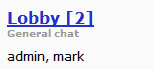

The name of the room is shown with the number of users within the room. The room topic is then listed. A list of the current users in the room is then shown.
If the room has a password or is hidden, that information will be displayed on the right side of the list.

For example, the entry above shows that in the room named Lobby there are 2 users. The topic is General chat and the two users in the room are admin and mark.
If you select a a room name, additional information about the users within the room will be displayed.
The amount of time the user has been online will be displayed as well as information about the user's browser. If the user is an administrator or operator that information will be displayed as well.

The record above shows that the user mark has been online for 38 seconds. The line below indicates the browser which is being used to access the chat. The host IP address is also displayed.
Please note that the room information does not refresh automatically. If you would like to refresh the list, you can use the Refresh button.